Transformasi Data adalah proses pembuatan atau modifikasi variabel atau fitur dari sebuah dataset untuk membuat dataset lebih mudah digunakan dan atau lebih akurat, sehingga dapat membuat model yang lebih akurat.
Konstruksi Data dibagi menjadi empat aktivitas utama, yaitu:
Rekayasa Fitur
Imputasi
Handling Outlier
Dokumentasi Fitur
7.1 RekayasaFitur
Rekayasa fitur adalah proses penambahan atau modifikasi fitur dengan mengaplikasikan penghitungan matematik, statistika, atau pengetahuan terhadap fitur.
Sebagai contoh, anda dapat membuat fitur baru bernama average atau rata rata yang mengambil nilai dari fitur-fitur lain. Atau anda dapat membuat fitur kategori baru dengan mengolah data dari fitur-fitur lain.
Diharapkan fitur-fitur yang di modifikasi atau ditambah dapat menambah kualitas dataset sehingga dapat menghasilkan model yang lebih akurat dan efisien.
7.1.1 Hands On Coding
Kita akan melakukan proses feature enginnering ke sebuah dataset dibawah ini
Jangan lupa untuk menginstall library pandas menggunakan command pip install pandas
UrbanPopulation, populasi manusia yang hidup di daerah urban (perumahan kota)
RuralPopulation, populasi manusia yang hidup di daerah rural (pinggiran kota)
SlumPopulation, populasi manusia yang hidup di daerah slum (pemukiman kumuh)
Pertama kita akan menghitung presentase jumlah populasi yang hidup di slum (pemukiman kumuh) dari populasi yang hidup di urban (perumahan kota). Nilai ini didapat menggunakan rumus:
Selanjutnya, kita menggabungkan dua fitur (urban dan rural) menjadi satu, dan mengubah nilainya dari jumlah penduduk ke presentase penduduk. Rumusnya cukup simple:
Hasilnya, nilai atau value di dataset lebih mudah dibaca, dan dapat direpresentasikan menggunakan fitur yang lebih sedikit. Dataset sudah siap untuk diproses lebih lanjut.
7.2 Imputasi
Imputasi adalah proses penggantian nilai data yang hilang dengan data yang baru. Seperti contoh rekayasa fitur sebelumnya, nilai NaN termasuk data yang perlu kita olah.
Dalam bab ini kita akan mempelajari beberapa hal terkait imputasi antara lain:
Jenis-jenis imputasi
Teknik imputasi
7.2.1 Jenis-jenis Imputasi
Jenis data yang hilang dikelompokkan menjadi 3, yaitu
Missing completely at random (MCAR)
Missing at random (MAR)
Missing not at random (MNAR)
Gambar1. Jenis-jenis Imputasi
7.2.1.1 Missing Completely At Random (MCAR)
Jika probabilitas hilangnya data dalam suatu fitur sama antara satu data dengan yang lain. Asumsi ini dapat diuji dengan memisahkan data yang hilang dan yang lengkap serta memeriksa karakteristik data. Jika karakteristik data tidak sama untuk kedua fitur, asumsi MCAR tidak berlaku
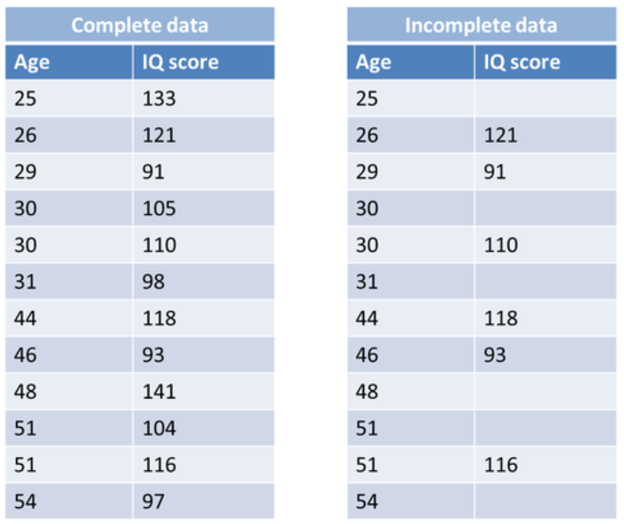
Gambar2. Contoh MCAR
7.2.1.2 Missing At Random (MAR)
Kemungkinan data yang hilang dipengaruhi oleh variabel lain, namun tidak dipengaruhi oleh variabel yang hilang. Sebagai contoh, untuk data di samping, hanya peserta dengan umur yang dibawah 31 yang nilainya hilang. Berarti fitur age mempengaruhi probabilitas missing data IQ score.
Gambar3. Contoh MAR
7.2.2 Missing Not At Random
Kemungkinan data yang hilang tidak dipengaruhi oleh fitur lain, namun dipengaruhi oleh fitur pada data yang hilang. Sebagai contoh, untuk data di samping, ada kemungkinan bahwa data IQ score yang hilang hanya data yang nilainya dibawah 110. Sedangkan variabel age tidak berpengaruh atas hilangnya data IQ score karena age yang kecil dan besar sama sama mempunyai data yang hilang
Gambar4. Contoh MNAR
7.2.3 Teknik-Teknik Imputasi
Perlu diingat bahwa jika 70% data hilang/missing, maka semua fitur(kolom) dan data (row) harus dihapus.
Gambar5. Flow Proses Imputasi
Data yang hilang harus dimutasikan berdasarkan jenis datanya, yaitu :
Numerik
Mean/Median
Arbitrary
End of tail
Regresi
KNN
Kategorik
Frequent/Modus
KNN
7.2.3.1 Mean
Dataset imputasi mean adalah metode untuk mengisi nilai yang hilang dalam dataset dengan menggunakan nilai rata-rata (mean) dari variabel yang bersangkutan. Ketika ada nilai yang hilang dalam suatu variabel dalam dataset, imputasi mean menggantikan nilai-nilai yang hilang tersebut dengan nilai rata-rata dari seluruh nilai yang ada dalam variabel tersebut.
Kelebihan
Mudah dan cepat.
Bekerja efektif untuk dataset numerik berukuran kecil.
Cocok untuk variabel numerik.
Cocok untuk data missing completely at random (MCAR).
Dapat digunakan dalam produksi (mis. dalam model deployment)
Kekurangan
Tidak memperhitungkan korelasi antar fitur, berfungsi pada tingkat kolom.
Kurang akurat.
Tidak memperhitungkan probabilitas/ketidakpastian.
Tidak cocok utk >5% missing data.
7.2.3.1.1 Hands On Coding
Pertama kita akan buat sebuah dataset menggunakan pandas dataframe
# buat dataset dengan format dataframedf = pd.DataFrame({'age': [25, 26, 29, 30, 30, 31, 44, 46],'IQ': [np.NaN, 121, 91, np.NaN, 110, np.NaN, 118, 93]})display(df)
age
IQ
0
25
NaN
1
26
121.0
2
29
91.0
3
30
NaN
4
30
110.0
5
31
NaN
6
44
118.0
7
46
93.0
Lalu kita akan hitung mean atau rata rata dari dataset
mean = df['IQ'].mean()print(f'Mean: {mean}, dibulatkan menjadi {round(mean)}')display(df)
Mean: 106.6, dibulatkan menjadi 107
age
IQ
0
25
NaN
1
26
121.0
2
29
91.0
3
30
NaN
4
30
110.0
5
31
NaN
6
44
118.0
7
46
93.0
Lalu kita masukkan nilai mean tersebut ke data yang kosong
# masukkan nilai mean ke missing valuedf['IQ'] = df['IQ'].fillna(round(mean))display(df)
age
IQ
0
25
107.0
1
26
121.0
2
29
91.0
3
30
107.0
4
30
110.0
5
31
107.0
6
44
118.0
7
46
93.0
7.2.3.2 Arbiter
Teknik imputasi arbiter (arbiter imputation) adalah metode untuk mengisi nilai yang hilang dalam dataset dengan menggunakan hasil gabungan dari beberapa metode imputasi yang berbeda. Dalam metode ini, beberapa teknik imputasi yang berbeda diterapkan pada dataset yang sama, dan hasil dari setiap teknik imputasi digabungkan menjadi satu nilai yang digunakan untuk mengisi nilai yang hilang.
Kelebihan
Sangat mudah dan cepat
Cocok untuk missing dataset dengan asumsi tidak missing at random
Kekurangan
Mengganggu variansi dan distribusi variable original
Dapat membentuk outlier
Semakin besar nilai arbitrary, maka semakin besar distorsi
7.2.3.2.1 Hands On Coding
Kita akan gunakan dataset yang sama seperti sebelumnya
# buat dataset dengan format dataframedf = pd.DataFrame({'age': [25, 26, 29, 30, 30, 31, 44, 46],'IQ': [np.NaN, 121, 91, np.NaN, 110, np.NaN, 118, 93]})display(df)
age
IQ
0
25
NaN
1
26
121.0
2
29
91.0
3
30
NaN
4
30
110.0
5
31
NaN
6
44
118.0
7
46
93.0
Cukup masukkan nilai arbiter ke data yang kosong. Dalam koding ini, nilai arbiter adalah 130.
df['IQ'] = df['IQ'].fillna(130)display(df)
age
IQ
0
25
130.0
1
26
121.0
2
29
91.0
3
30
130.0
4
30
110.0
5
31
130.0
6
44
118.0
7
46
93.0
7.2.3.3 End Of Tail
Teknik imputasi end of tail adalah metode untuk mengisi nilai yang hilang dalam dataset dengan menggunakan nilai ekstrem (tail) dari distribusi data yang ada. Metode ini didasarkan pada asumsi bahwa nilai yang hilang cenderung berada di ekor distribusi data. Namun untuk teknik ini kita harus mengikuti sebuah ketentuan khusus, yaitu:
Jika distribusi data bersifat normal, maka gunakan rumus : \[
{\sigma = \sqrt{\dfrac{\Sigma |x-\mu|^2}{N}}}
\]
Jika distribusi data bersifat skewed, maka gunakan rumus IQR proximity \[
{IQR = Q_{3} - Q_{1}}
\]
7.2.3.3.1 Distribusi Normal
Data yang terdistribusi secara normal, juga dikenal sebagai distribusi Gaussian atau kurva lonceng, mengacu pada distribusi statistik di mana titik-titik data secara simetris terdistribusi di sekitar nilai rata-rata, menciptakan kurva berbentuk lonceng yang khas.
Untuk menghitung data yg mempunyai distribusi normal, kita harus mengetahui standar deviasinya. Berikut rumus untuk menghitung standar deviasi : \[
{\mu + 3 * \sigma}
\] Keterangan:
= Standar Deviasi
= jumlah x = data yang dihitung
= Mean/rata rata N = Jumlah data
7.2.3.3.2 Distribusi Normal - Hands On Coding
Pertama kita akan buat sebuah dataset yang cukup besar jika dibandingkan dengan dataset yang diatas.
Jangan lupa untuk menginstall library yang dibutuhkan :
Dapat dilihat bahwa grafik histogram membentuk seperti gunung atau lonceng, dengan puncak tepat di tengah-tengah grafik. Inilah salah satu karakteristik dataset dengan distribusi normal.
Selanjutnya, kita akan mencari mean dari dataset
# nilai kosong dihilangkan dari data terlebih dahuludata = [85, 90, 95, 95, 100, 100, 110, 105, 105,110, 110, 110, 115, 115, 115, 120, 125, 130]mean = np.mean(data)print(f'Mean dari dataset adalah: ', mean)
Mean dari dataset adalah: 107.5
Lalu, kita akan menghitung jarak antara nilai x dan mean
total =0for i in data: calc = (107.5-i)**2 total = total + calcprint(f'jarak antara nilai x dan mean adalah ', total)
jarak antara nilai x dan mean adalah 2412.5
Mari kita hitung standar deviasi nya
# math.sqrt adalah fungsi untuk melakukan operasi akar pangkat# round adalah fungsi untuk membulatkan hasil operasi)stddev =round(math.sqrt(total/len(data)), 2)print(f'nilai standar deviasi adalah ', stddev)
nilai standar deviasi adalah 11.58
Hitung nilai imputasi End of Tail
imp =round(mean +3* stddev, 1)print(f'nilai imputasi end of tail adalah ', imp)
nilai imputasi end of tail adalah 142.2
Dari kalkulasi nilai imputasi end of tail, diperoleh nilai 142.2.
Kita akan memasukkan nilai ini ke dalam dataset
df['IQ'] = df['IQ'].fillna(imp)display(df)
age
IQ
0
25
85.0
1
26
90.0
2
29
95.0
3
30
95.0
4
30
100.0
5
31
142.2
6
44
100.0
7
46
110.0
8
22
105.0
9
33
105.0
10
35
110.0
11
27
142.2
12
21
110.0
13
23
110.0
14
45
115.0
15
47
115.0
16
41
115.0
17
38
120.0
18
37
142.2
19
21
125.0
20
24
130.0
7.2.3.3.3 Distribusi Skewed
Distribusi skew atau skewness mengacu pada karakteristik asimetri dalam distribusi data. Dalam distribusi skew, ekor distribusi data cenderung condong ke salah satu sisi, baik ke kanan (positif) atau ke kiri (negatif), dibandingkan dengan pusat distribusi.
Dalam distribusi skew positif, ekor distribusi condong ke kanan, sementara nilai-nilai yang lebih kecil cenderung berada di sebelah kiri. Ini menghasilkan ekor yang panjang di sisi kanan distribusi.
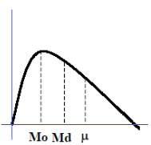
Dalam distribusi skew negatif, ekor distribusi condong ke kiri, dengan nilai-nilai yang lebih besar cenderung berada di sebelah kiri. Ini menghasilkan ekor yang panjang di sisi kiri distribusi. Nilai rata-rata akan lebih kecil daripada median dalam distribusi ini.
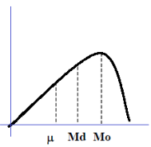
7.2.3.3.4 Distribusi Skewed - Hands On Coding
Pertama-tama mari kita buat data baru yang terdiri dari 21 data dengan 3 missing value. Tugas kita adalah mengisi missing value dengan imputasi end of tail.
Distribusi data adalah skew negatif karena puncak dari data berada di sebelah kanan titik tengah. Mari kita hitung nilai imputasi menggunakan rumus IQR.
Inter-Quartile-Range (IQR) adalah sebuah nilai yang digunakan untuk mengukur sebaran data dalam sebuah distribusi.
\({IQR = Q_{3} - Q_{1}}\)
\({IQR_{max} = Q_{3} + 3 * IQR}\)
\({IQR_{min} = Q_{1} + 3 * IQR}\)
Pertama-tama, kita akan hitung nilai precentile dari dataset, yang dapat kita kalkulasi dengan mudah menggunakan fungsi np.precentile dari library numpy.
Anda boleh memilih nilai diantara IQRmin dan IQRmax. Namun untuk contoh ini, kita akan ambil nilai IQRmax saja, lalu kita masukkan ke dataset.
df['IQ'] = df['IQ'].fillna(iqrmax)display(df)
age
IQ
0
25
125.00
1
26
130.00
2
29
125.00
3
30
95.00
4
30
115.00
5
31
176.25
6
44
100.00
7
46
176.25
8
22
130.00
9
33
110.00
10
35
90.00
11
27
110.00
12
21
120.00
13
23
115.00
14
45
105.00
15
47
85.00
16
41
115.00
17
38
110.00
18
37
120.00
19
21
100.00
20
24
176.25
7.2.3.4 Regresi Linier
Teknik imputasi regresi adalah metode untuk mengisi nilai kosong menggunakan algoritma regresi. Algoritma regresi akan memprediksi nilai kosong berdasarkan hubungan fitur nilai kosong dengan fitur lainnya.
Kelebihan
Sederhana dan mudah dipahami
Menggabungkan hubungan antar variabel
Cocok untuk data yang besar dan bersifat numerik
Kekurangan
Hanya berlaku untuk data yang linear
Sensitif terhadap outlier
Tidak dapat menangani data non-numerik
Bergantung kepada dua fitur
7.2.3.4.1 Regresi Linier - Hands On Coding
Kelemahan utama dari teknik regresi ini adalah dataset harus mempunyai distribusi linear. Mengambil contoh dataset age (umur) dan IQ, Jika dataset tersebut adalah linear, semakin tinggi umur seseorang, maka semakin tinggi IQ orang tersebut.
Maka dari itu, kita harus mengecek jenis data yang akan kita kerjakan, apakah data tersebut bersifat linear atau tidak. Untuk mengecek dataset, kita gunakan grafik scatter plot.
Secara garis besar, scatter plot membentuk sebuah garis diagonal dari pojok kiri atas ke pojok kiri bawah.
Gambar9. Data bersifat Linear
Untuk menambah keyakinan kita bahwa dataset bersifat linear, kita dapat melakukan pengecekan dataset menggunakan pearson correllation. Kita harus menginstall library scipy terlebih dahulu dengan menjalankan perintah pip install scipy di terminal atau command prompt.
Pearson correlation adalah sebuah rumus yang berfungsi untuk menghitung kekuatan dan arah hubungan antara dua variable. nilai -1 mengindikasikan bahwa korelasi bersifat negatif, semakin kecil nilai variable x, maka nilai variable y akan semakin besar. nilai 0 mengindikasikan bahwa tidak ada korelasi linear antara variable. nilai 1 mengindikasikan bahwa korelasi bersifat positif.
nilai pearson -0.53 menandakan bahwa hubungan antara variabel umur dan iq adalah linear negatif yang mempunyai intensitas lemah.
Selanjutnya, kita akan membuat model regresi. Sebelumnya, kita harus menginstall library keras dengan cara menjalankan perintah pip install keras di terminal atau command prompt.
WARNING:tensorflow:5 out of the last 5 calls to <function Model.make_predict_function.<locals>.predict_function at 0x000002807CDE8C20> triggered tf.function retracing. Tracing is expensive and the excessive number of tracings could be due to (1) creating @tf.function repeatedly in a loop, (2) passing tensors with different shapes, (3) passing Python objects instead of tensors. For (1), please define your @tf.function outside of the loop. For (2), @tf.function has reduce_retracing=True option that can avoid unnecessary retracing. For (3), please refer to https://www.tensorflow.org/guide/function#controlling_retracing and https://www.tensorflow.org/api_docs/python/tf/function for more details.
Lalu buat hasil prediksi dari model regresi. Nilai yang kosong adalah IQ dengan umur 27, 31, dan 37. Maka kita masukkan ketiga nilai tersebut ke model untuk di prediksi nilai IQ nya.
WARNING:tensorflow:6 out of the last 6 calls to <function Model.make_predict_function.<locals>.predict_function at 0x000002807CDE8C20> triggered tf.function retracing. Tracing is expensive and the excessive number of tracings could be due to (1) creating @tf.function repeatedly in a loop, (2) passing tensors with different shapes, (3) passing Python objects instead of tensors. For (1), please define your @tf.function outside of the loop. For (2), @tf.function has reduce_retracing=True option that can avoid unnecessary retracing. For (3), please refer to https://www.tensorflow.org/guide/function#controlling_retracing and https://www.tensorflow.org/api_docs/python/tf/function for more details.
Imputasi frequent adalah teknik imputasi yang hanya bisa digunakan di jenis data kategorik. Kita mengambil nilai kategorik yang paling sering muncul, dan memasukkannya ke data yang kosong.
Kelebihan
Cocok untuk data dengan missing at random.
Mudah dan cepat diterapkan.
Cocok utk data yang memiliki skew
Dapat digunakan dalam produksi (mis. dalam model deployment).
Kelemahan
Mendistorsi relasi label dengan frekuensi tertinggi vs variabel lain.
Menghasilkan over-representation jika banyak data yang missing.
7.2.3.5.1 Frequent - Hands On Coding
Langkah pertama adalah memuat dataset yang mempunyai jenis data kategorik. Oleh karena itu, fitur IQ kita ganti oleh nilai rendah, sedang, dan tinggi
IQ
sedang 8
rendah 5
tinggi 5
Name: count, dtype: int64
Kategori sedang mempunyai frekuensi paling tinggi dengan nilai 8. Jadi, nilai imputasi yang akan kita gunakan adalah sedang
Selanjutnya, kita masukkan data sedang ke dataset.
df['IQ'] = df['IQ'].fillna('sedang')display(df)
age
IQ
0
25
rendah
1
26
sedang
2
29
sedang
3
30
sedang
4
30
sedang
5
31
rendah
6
44
sedang
7
46
tinggi
8
22
sedang
9
33
sedang
10
35
rendah
11
27
sedang
12
21
tinggi
13
23
sedang
14
45
sedang
15
47
rendah
16
41
tinggi
17
38
sedang
18
37
tinggi
19
21
rendah
20
24
tinggi
7.2.3.6 K-Nearest Neighbor (KNN)
Imputasi menggunakan K-Nearest Neighbors (KNN) adalah sebuah metode untuk mengisi data kosong dengan mempertimbangkan nilai terdekat dari fitur lain di kategori yang sama.
Kelebihan
Lebih akurat vs mean/median/most frequent.
Kekurangan
Biaya komputasi mahal (karena KNN bekerja dengan menyimpan seluruh dataset pelatihan dalam memori).
-Sensitif terhadap outlier dalam data (tidak seperti SVM).
7.2.3.6.1 K-Nearest Neighbor (KNN) - Hands On Coding
Dataset yang kita gunakan sama dengan contoh diatas
Lalu kita membuat model KNN. Hasil dari KNN bisa langsung dimasukkan ke dataset.
imputer = KNNImputer(n_neighbors=3)# isi missing value dengan KNN, lalu dibulatkandf = pd.DataFrame(np.round(imputer.fit_transform(df)), columns=df.columns)display(df)
age
IQ
0
25.0
1.0
1
26.0
2.0
2
29.0
2.0
3
30.0
2.0
4
30.0
2.0
5
31.0
1.0
6
44.0
2.0
7
46.0
3.0
8
22.0
2.0
9
33.0
2.0
10
35.0
1.0
11
27.0
2.0
12
21.0
3.0
13
23.0
2.0
14
45.0
2.0
15
47.0
1.0
16
41.0
3.0
17
38.0
2.0
18
37.0
3.0
19
21.0
1.0
20
24.0
3.0
7.2.3.7 Kesimpulan
Sebelum melakukan imputasi kita harus mengetahui jenis missing data, tipe data, dan distribusi data
Tidak ada metode imputasi yang sempurna, masing masing teknik mempunyai kelebihan dan kelemahan yang unik
Distribusi data sangat berpengaruh terhadap efisiensi imputasi
Imputasi dapat dilakukan menggunakan function dari library sklearn, feature_engine, dan keras. Namun akan jauh lebih baik jika kita menghitung/coding secara manual untuk mengetahui cara kerja algoritma tsb sebelum menggunakan function dari library.
7.3 Dokumentasi Fitur
Dokumentasi data dapat menjembatani kesenjangan antara transaksi (pembuatan data) dan analisis (konsumsi data). Dokumentasi data yang baik memungkinkan pengguna, ataupun rekan tim untuk memahami siapa/apa/kapan/di mana/bagaimana/mengapa data tersebut dibentuk ataupun dikonsumsi.
Secara umum, dokumentasi fitur dari sebuah dataset mempunyai beberapa poin, yaitu :
Nama fitur
Definisi
Tipe data
Skala
Sumber data
Keterangan
Mari kita lakukan sebuah dokumentasi fitur dari dataset spotify yang kita gunakan di slide sebelumnya. Dengan menggunakan code data.info() kita bisa mengetahui banyak hal tentang dataset kita
Fitur atau kolom adalah satuan data yang mendeskripsikan aspek tertentu dalam data. Di dalam dataset ini, kita mempunyai beberapa fitur, antara lain :
Valence
Year
Acousticness
Artists
Danceability
Duration_ms
Energy
Explicit
ID
Instrumentalness
Key
Liveness
Loudness
Mode
Name
Popularity
Release_date
Speechiness
Tempo
7.3.2 Definisi Fitur
Setiap fitur mempunyai definisi atau penjelasan makna tertentu. Definisi yang ada di bawah hanya sebagian dari dataset saja. Untuk definisi keseluruhan data bisa dilihat di https://developer.spotify.com/documentation/web-api/reference/get-several-audio-features.
Beriku definisi fitur dari dataset :
name, Nama lagu
artists, Nama artis pembuat lagu
year, Tahun rilis lagu
popularity, Tingkat popularitas lagu. Nilai popularitas adalah antara 0 dan 100, dengan 100 menjadi nilai maksimal.
key, adalah kunci lagu dari lagu tersebut. kunci lagu direpresentasikan menggunakan angka menurut Pitch Class Notation Standard. Misalnya, 0 = C, 1 = C/D, 2 = D, dan seterusnya. Jika tidak ada kunci, maka nilai -1.
mode, Mode dari lagu tersebut. 1 = Major, 0 = Minor.
7.3.3 Tipe Data
Tipe data sangatlah penting karena tipe data menentukan operasi atau function apa yang bisa dilakukan terhadap data tersebut. Sebagai contoh, untuk menentukan nilai random, kita tidak bisa menggunakan angka float (pecahan), kita harus menggunakan angka integer (bulat).
Kita dapat mengecek tipe data dari sebuah dataset menggunakan function data.info()
Data diperoleh dari kaggle dengan link https://www.kaggle.com/datasets/vatsalmavani/spotify-dataset
Kaggle adalah platform dataset open source. Namun dataset spotify ini dapat di scrape secara mandiri dengan mendaftar sebagai developer di spotify dan mengambil data menggunakan API spotify.
Setelah di download data diambil 100 baris secara random untuk meningkatkan performa dari coding.
7.3.6 Keterangan
Data mempunyai beberapa lagu yang tidak valid, jadi harus dilakukan proses data cleaning.
8 Pelabelan Data
Pelabelan data (data labeling) adalah proses menandai atau memberi label pada data dengan kelas atau kategori yang sesuai.
Kuantitas & kualitas data pelatihan yang secara langsung menentukan keberhasilan suatu algoritma AI sehingga tidak mengherankan jika rata-rata 80% waktu yang dihabiskan untuk proyek AI membahas data pelatihan yang mencakup proses pelabelan data.
Keakuratan model AI Anda berkorelasi langsung dengan kualitas data yang digunakan untuk melatihnya. Hal ini menjadi satu alasan mengapa proses pelabelan data merupakan bagian integral dari alur kerja persiapan data dalam membangun model AI yang handal.
8.1 Data Training
Machine learning dibagi menjadi dua, yaitu supervised dan unsupervised learning. Unsupervised learning menggunakan dataset tanpa label untuk menemukan sebuah pola, struktur atau hubungan antar fitur untuk melatih algoritma machine learning. Supervised learning menggunakan dataset yang mempunyai label untuk melatih algoritma machine learning memprediksi nilai atau mengklasifikasikan sesuatu.
Namun, tidak semua dataset mempunyai label. Dan tidak semua dataset yang tidak mempunyai label dapat di training menggunakan unsupervised learning. Jadi, kita harus melakukan proses labeling dataset.
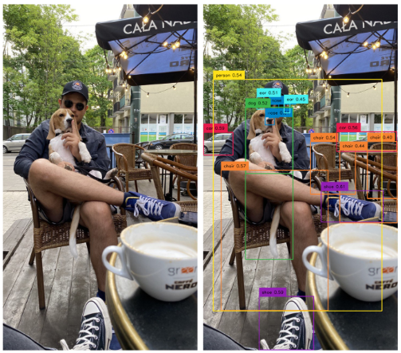
Gambar12. Pelabelan data gambar
Ketika sebuah dataset diberi sebuah label, maka label tersebut sebagai dasar kebenaran atau ground truth.
Pelabelan dataset sangatlah penting untuk proses machine learning. Proses labeling data dapat mempengaruhi kualitas dan akurasi dari sebuah model.
Selain itu, pelabelan dataset dapat meningkatkan kualitas dari dataset, sehingga dataset dapat diproses oleh lebih banyak algoritma machine learning.
Contoh lain dari pelabelan dataset deteksi email spam :
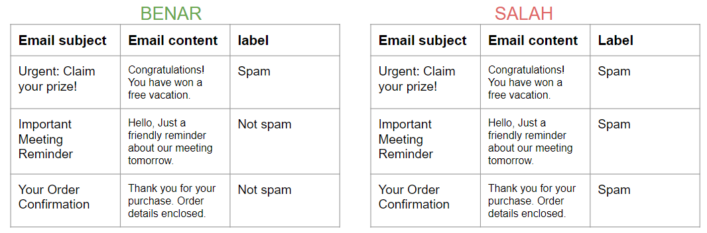
Kesimpulannya, jika pelabelan dataset tidak akurat, maka hasil prediksi yang dibuat oleh algoritma machine learning tidak akan akurat
8.2 Metode Pelabelan Data
Data labeling adalah langkah yang sangat penting dalam proses pengembangan model machine learning. Proses ini terlihat simpel, namun sebenarnya tidak semudah itu untuk diimplementasikan. Sebagai data scientist/data engineer, kita harus mempertimbangkan semua faktor dan metode yang ada untuk menentukan implementasi yang terbaik. Seperti semua hal di dunia programming, setiap metode pelabelan data mempunyai kelebihan dan kekurangan. Berikut beberapa metode pelabelan data yang sering digunakan :
8.2.1 Internal Labeling
Proses labeling data oleh data scientist, data engineer, atau staf expert lain yang bekerja di perusahaan.
Kekuatan
- Kualitas labeling tinggi
- Akurasi labeling tinggi
- Kemanan data terkontrol
Kelemahan
- Membutuhkan waktu dan tenaga yang banyak
- Cukup mahal
8.2.2 Synthetic labeling
Proses labeling data yang dilakukan dengan men-generate data baru (dengan pattern yang mirip) dari data yang sudah ada. Contohnya adalah imagen (image generator) dimana sebuah gambar diputar dan digeser sehingga menghasilkan data baru. Proses ini biasanya dilakukan untuk melatih sebuah model machine learning
Kekuatan
- Cepat
- Tidak membutuhkan tenaga yang banyak
Kelemahan
- Tidak semua algoritma bisa menerima semua jenis generated data
8.2.3 Programmatic labeling
Proses labeling data yang dilakukan oleh algoritma atau mesin, umumnya algoritma machine learning berbentuk klasifikasi, clustering, atau regresi.
Kekuatan
- Proses labeling cepat dan dapat diskalakan dengan mudah
- Tidak membutuhkan tenaga yang banyak
Kelemahan
- Kualitas labeling tergantung pada kualitas dataset dan penerapan algoritma machine learning
- Cukup mahal tergantung dengan skala dan penggunaan hardware
- Proses training model bisa lama
8.2.4 Outsourcing
Outsourcing adalah kegiatan merekrut perusahaan atau organisasi untuk melakukan proses data labeling. Salah satu pertimbangan utama adalah spesialisasi dan kompetensi dari sebuah perusahaan atau organisasi tersebut. Kekuatan
Simple
Hasil labeling akurat
Kelemahan
Mahal
Memakan waktu lama
8.2.5 Crowdsourcing
Crowdsourcing adalah proses dimana pekerjaan data labeling didistribusikan ke khalayak publik, umumnya freelancer melalui platform website. Contohnya adalah project ReCaptcha dimana manusia diminta untuk mengisi captcha, lalu hasilnya dimasukkan ke algoritma machine learning untuk memprediksi captcha. Kekuatan
Paling efisien, dapat mengolah banyak data dalam waktu singkat
Kelemahan
Perlu mengembangkan workflow yang cocok untuk freelancer
Akurasi tergantung dengan QA dan workflow
Potensi kebocoran data tinggi
8.3 Penggunaan Data Labeling dalam Pengolahan Citra
Pengolahan citra adalah kegiatan memanipulasi data yang berbentuk gambar atau video. Di bidang machine learning, pengolahan citra adalah salah satu bidang yang paling penting.
Model machine learning pengolah citra yang sering dibuat meliputi: klasifikasi, segmentasi, deteksi objek, dan estimasi pose. Semua proses pembuatan model machine learning sangat erat kaitannya dengan pelabelan data yang digunakan di data training.
Tujuan akhir dari semua model yang telah disebutkan adalah melabeli sebuah gambar atau video dengan sesuatu.
8.3.1 Image Classification
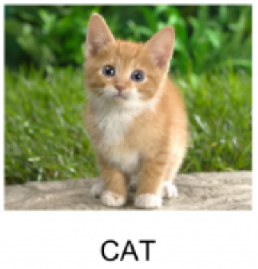
Image classification model adalah jenis model dalam bidang pengolahan citra yang digunakan untuk mengklasifikasikan gambar ke dalam berbagai kategori atau kelas yang telah ditentukan sebelumnya. Tujuan dari model ini adalah untuk mengidentifikasi dan memprediksi kelas atau label yang sesuai dengan gambar yang diberikan.
8.3.2 Image Segmentation
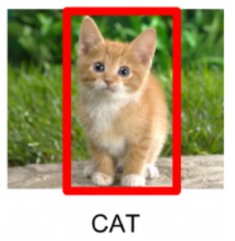
Image segmentation adalah proses dalam pengolahan citra yang membagi atau memisahkan gambar menjadi beberapa bagian/segmen yang lebih kecil. Setiap segmen mewakili area yang memiliki karakteristik visual yang serupa, seperti warna, tekstur, atau bentuk. Tujuan dari image segmentation adalah untuk memahami struktur internal gambar dan mengidentifikasi objek yang ada di dalamnya.
Kemiripan antara segmentasi dan klasifikasi adalah objek atau hasil prediksi hanya mempunyai satu nilai
8.3.3 Object Detection
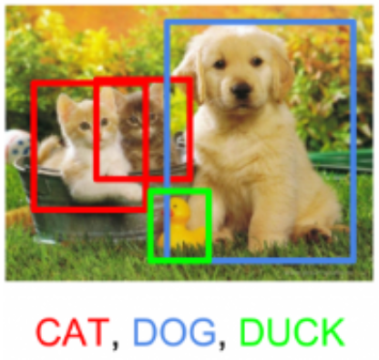
Deteksi objek adalah proses dalam pengolahan citra yang bertujuan untuk mengidentifikasi dan memetakan objek-objek tertentu dalam sebuah gambar atau video. Tujuan utama dari deteksi objek adalah untuk menemukan dan menandai lokasi serta batas-batas objek yang ada dalam sebuah gambar.
Perbedaan object detection dengan metode-metode sebelumnya yaitu objek atau hasil prediksi mempunyai lebih dari satu hasil
8.3.4 Pengolahan Citra - Hands On Coding
Kita akan membuat model object detection menggunakan library OpenCV. Kita juga akan menggunakan algoritma classifier bernama Haar Cascade. Untuk file lengkapnya bisa dilihat di sini link paper.
Algoritma ini menggunakan sebuah sistem machine learning dimana kita memberikan gambar positif dan negatif. Gambar positif adalah gambar objek yang kita ingin klasifikasikan, sedangkan gambar negatif adalah gambar objek yang tidak ingin kita klasifikasikan.
Karena keterbatasan waktu, kita akan menggunakan model yang sudah jadi untuk melakukan deteksi objek pada gambar yang kita inginkan. Pada kasus ini, kita akan mendeteksi rambu lalu lintas stop.
8.3.4.1 Download Library
Library bisa di download menggunakan pip install opencv-python dan pip install matplotlib
8.3.4.2 Import Library
buat file python dan import package-package sebagai berikut:
import cv2
import matplotlib.pyplot as plt
8.3.4.3 Download Model dan Gambar Contoh
Download pre-trained model yang mempunyai format .xml di link ini. Jangan lupa download gambar stop sign.
Gambar17. Contoh gambar stop sign
8.3.4.4 Ekstrak Model dan Gambar ke Directory
8.3.4.5 Tampilkan Gambar Menggunakan OpenCV dan Matplotlib
# buka gambar menggunakan opencvimg = cv2.imread("image.jpg")# OpenCV membuka gambar menggunakan metode BRG (blue red green)# namun kita ingin membuka dengan metoded RGB (red green blue)# kita harus konversi dari BRG ke RGBimg_rgb = cv2.cvtColor(img, cv2.COLOR_BGR2RGB)# kita juga membutuhkan gambar versi grayscale (hitam putih)img_gray = cv2.cvtColor(img, cv2.COLOR_BGR2GRAY)# menampilkan gambar menggunakan matplotlibplt.subplot(1, 1, 1)plt.imshow(img_rgb)plt.show()
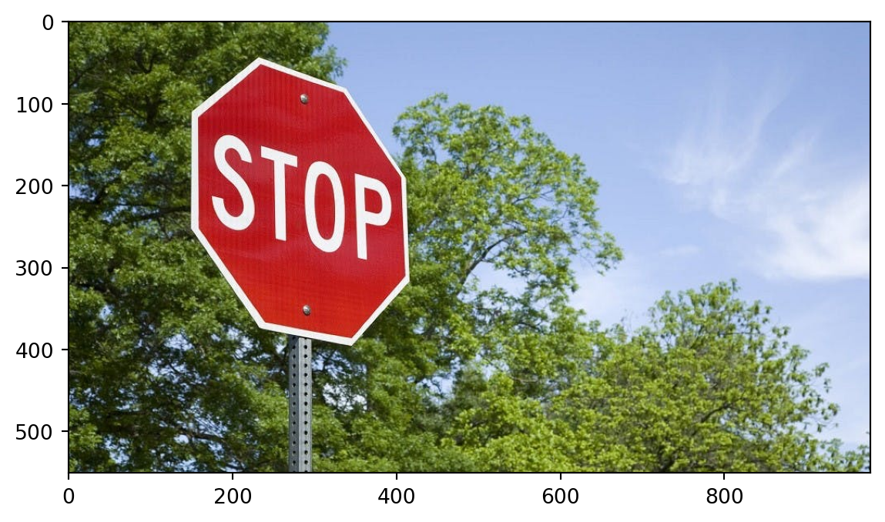
8.3.4.6 Buat Algoritma Deteksi Objek
# load model yang sudah dilatih untuk mendeteksi stop sign# model berbentuk file xmlstop_data = cv2.CascadeClassifier('stop_data.xml')# buat ukuran kotak minimum agar ukuran kotak yang terdeteksi tidak terlalu kecilfound = stop_data.detectMultiScale(img_gray, minSize=(5, 5))# hitung jumlah objek yang ditemukan.amount_found =len(found)# jika objek tidak ditemukan maka tidak dilakukan apa-apaif amount_found !=0:# jika objek yang ditemukan lebih dari satu, maka :for (x, y, width, height) in found:# kita gambar sebuah kotak hijau di objek yang ditemukan cv2.rectangle(img_rgb, (x, y), (x + height, y + width), (0, 255, 0), 5)# tampilkan hasil citra menggunakan pltplt.subplot(1, 1, 1)plt.imshow(img_rgb)plt.show()
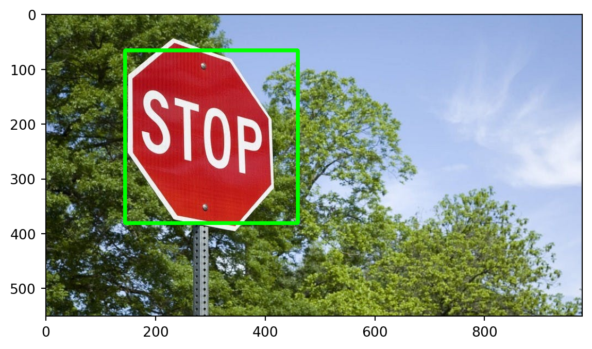
8.3.4.7 Eksperimen!
Cari gambar rambu lalu lintas stop di internet atau ambil foto secara langsung, lalu masukkan gambar tersebut ke coding. Terapkan algoritma dan lihat apakah algoritma deteksi objek berjalan dengan sempurna.
Petunjuk : edit line cv2.imread([nama file foto]) untuk menggunakan gambar atau foto anda sendiri
8.4 Penggunaan Data Labeling dalam Natural Language Processing
Natural Language Processing atau NLP mengacu pada analisis bahasa manusia dan bentuknya selama interaksi baik dengan manusia lain maupun dengan mesin. Menjadi bagian dari linguistik komputasi awalnya, NLP telah berkembang lebih lanjut dengan bantuan Artificial Intelligence dan Deep Learning.
8.4.1 Sentiment Analysis
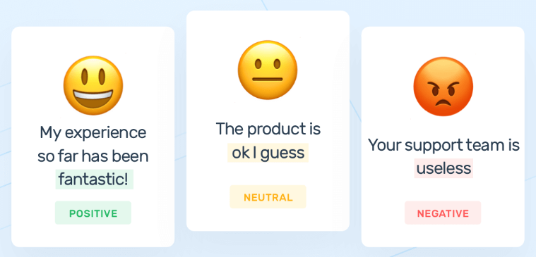
Adalah sebuah proses pemberian label sentimen terhadap sebuah teks (kata, kalimat, atau paragraf) berdasarkan ekspresi perasaan manusia. Tujuan utamanya adalah untuk mengkategorikan teks berdasarkan sentimen yang diekspresikan oleh teks.
Teks dianalisa dengan mempertimbangkan beberapa faktor, antara lain : pemilihan kata, konteks, subjektivitas, dan beberapa faktor lain. Lalu sebuah sentimen berupa perasaan (marah, sedih, bahagia, bingung) dilabelkan ke teks tersebut.
8.4.2 Named Entity Recognition (NER)
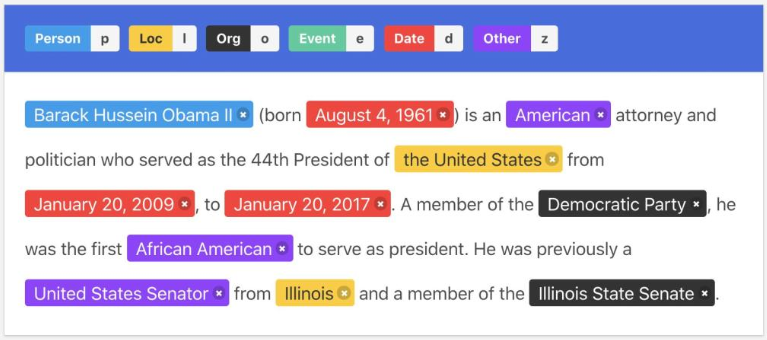
Adalah sebuah proses pemberian label entitas dalam sebuah teks. Entitas adalah sebuah kategori luas yang dapat diatur oleh pembuat algoritma. Contoh dari entitas antara lain, nama seseorang, lokasi, negara, organisasi, besaran, jumlah uang, dan lain lain.
Tujuan utama dari NER adalah mengekstrak informasi entitas dari sebuah teks. Dalam proses labeling, algoritma harus memperhatikan konteks, struktur kata, dan arti tersirat dalam sebuah teks untuk mengidentifikasi sebuah entitas secara akurat.
8.4.3 Part of Speech Tagging (POS-tagging)
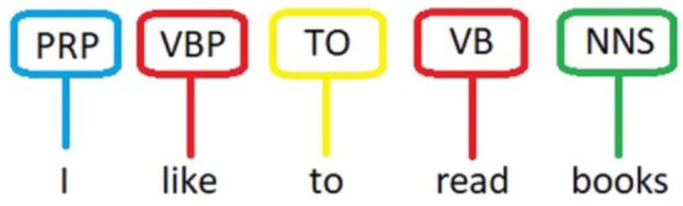
Adalah sebuah proses pemberian label kategori tata-bahasa (grammar) dalam sebuah teks. Pada umumnya sebuah kalimat terdiri dari beberapa kata yang termasuk dalam kategori grammar kata benda (noun), kata sifat (adjective), keterangan (adverb), kata ganti (pronoun), dan lain-lain.
Tujuan utama POS-tagging adalah untuk menentukan kategori grammar dari sebuah kata di dalam sebuah konteks yang ada di teks. POS-tagging sangatlah penting karena grammar atau tata-bahasa dapat mengubah makna dari sebuah kalimat secara keseluruhan.
8.4.4 Hands On Coding
Dalam praktikum ini kita akan membuat algoritma Named Entity Recognition menggunakan library spaCy dan sebuah artikel.
8.4.4.1 Download Library dan Dataset yang Dibutuhkan
python -m pip install -U pip setuptools wheel
pip install -U spacy
python -m spacy download en_core_web_sm
8.4.4.2 Import library
import spacy
from spacy import displacy
8.4.4.3 Masukkan Model NER SpaCy
NER = spacy.load("en_core_web_sm")
8.4.4.4 Tentukan Artikel yang Akan di Proses. Artikel Harus Berbahasa Inggris.
rawtext ="Asus Zenfone 10 will please everyone who finds the current flagship cellphones too bulky: the compact and relatively light smartphone comes with a lot of memory on request, which also works as fast as an arrow. It scores with very high system performance, long software updates, fast WiFi 7 and a stylish, IP-certified case that is also available in brighter color variants. At a price of US$749, however, the smartphone competes with the Samsung Galaxy S23 or the Apple iPhone 13 mini and you have to accept a few weaknesses. For example, compared to Samsung's flagship, the camera lacks the optical zoom capability, which reduces the flexibility of the camera setup. Compared to the iPhone, the images appear less sharp. The screen could also be a little brighter, the strong heating of the phone under high load is annoying and the battery life is average. The fact that Asus installs a USB 2.0 port in its Zenfone 10 is also no reason for joy. But users who want a 3.5mm port combined with high performance will hardly get past the Zenfone 10."
8.4.4.5 Masukkan Artikel ke Fungsi NER, Lalu tampilkan hasilnya
text1 = NER(rawtext)for word in text1.ents:print(word.text, '-', word.label_)
Asus Zenfone - PERSON
WiFi - PERSON
7 - CARDINAL
IP - ORG
749 - MONEY
Samsung - ORG
Apple - ORG
13 - CARDINAL
Samsung - ORG
iPhone - ORG
Asus - PERSON
2.0 - CARDINAL
Zenfone 10 - LAW
3.5mm - QUANTITY
8.4.4.6 Kesimpulan
Hasil dari NER adalah sebuah kata yang dideteksi dan kategori dari kata tersebut. Namun bisa dilihat bahwa hasil dari algoritma tidak 100% akurat. Ada beberapa hasil yang labelnya tidak sesuai, contohnya Asus - PERSON. Algoritma melabeli kata Asus sebagai sebuah nama orang, padahal Asus seharusnya adalah sebuah organisasi (ORG).
8.4.4.7 Eksperimen!
Cari teks dari artikel, wikipedia, berita, lalu masukkan teks tersebut ke algoritma NER dan analisa hasil dan akurasi dari algoritma.
Petunjuk : masukkan teks ke dalam variable rawtext sebagai string ()
8.5 Analisa Kualitas dan Akurasi Data untuk Pelabelan
Akurasi dalam pelabelan data mengukur seberapa dekat pelabelan dengan ground truth, atau seberapa baik fitur berlabel dalam data set konsisten dengan kondisi dunia nyata. Dalam model pemrosesan bahasa alami (NLP) contohnya adalah seberapa akurat model memberikan label sentimen terhadap sebuah teks.
Kualitas dalam pelabelan data adalah tentang akurasi dataset secara keseluruhan. Apakah pekerjaan semua pemberi label terlihat sama? Apakah pelabelan secara konsisten akurat di seluruh data set?
8.5.1 Definisi Data yang Berkualitas
Proses pelabelan data selalu bertumpu pada kualitas data. Trash in, trash out adalah sebuah mantra yang populer di dunia pengolahan data. Artinya, data yang tidak berkualitas tidak dapat menghasilkan produk yang berkualitas.
Maka dari itu, data harus kita tentukan kualitas dan akurasinya agar kita dapat menentukan ekspektasi terhadap hasil dari pelabelan data yang akan kita lakukan. Pada umumnya data yang berkualitas mempunyai :
Tidak ada nilai kosong/korup
Nilai unik tiap entry
Variasi seimbang
Metode pengambilan data yang tangguh
Dokumentasi lengkap
Format yang rapi
8.5.2 Faktor-faktor yang mempengaruhi kualitas proses pelabelan data
8.5.2.1 Pemahaman Data
Data mempunyai banyak fitur dan value. Pengetahuan tentang fitur data dan nilai-nilai yang ada didalamnya akan sangat membantu untuk menentukan proses pelabelan data.
8.5.2.2 Kompetensi Developer/Trainer
Developer harus mempunyai pengetahuan yang luas di bidang machine learning atau bidang yang relevan. Developer harus bisa menentukan kualitas dataset, langkah-langkah data preprocessing, algoritma yang sesuai, dan cara untuk mengukur akurasi pelabelan.
8.5.2.3 Ketangguhan Workflow
Proses pelabelan data pasti mempunyai tahap-tahap yang ditetapkan oleh kepemimpinan. Proses atau workflow tersebut harus tahan terhadap gangguan-gangguan seperti human error, machine error, perubahan requirements, ambiguitas, sehingga proses dapat berjalan lancar selamanya. Salah satu proses terpenting yaitu QA, yang akan kita bahas di slide selanjutnya
8.5.3 Metode QA untuk mengukur kualitas data
8.5.3.1 Consensus Algorithm
Adalah sebuah metodologi untuk mencapai sebuah keputusan mengenai kualitas data dengan cara mengumpulkan persetujuan (consensus) dari semua atau sebagian orang yang melakukan proses data labeling.
8.5.3.2 Benchmarking dan Gold Standard
Adalah proses membandingkan hasil data labeling dari beberapa model dengan mengaplikasikan model tersebut ke dataset yang sering digunakan. Tujuan utamanya dalah untuk memperoleh batas bawah (baseline) atau reference point untuk mengevaluasi kualitas dari model. Gold standard adalah sebuah hasil pelabelan dari sebuah model berkualitas tinggi terhadap dataset berkualitas tinggi. Gold standard merepresentasikan teknologi terbaik, aplikasi terakurat, dan dataset berkualitas paling tinggi, hasilnya adalah nilai akurasi yang paling tinggi diantara riset atau percobaan lain.
8.5.3.3 Cronbach Alpha Test
Adalah sebuah metode untuk mengukur tingkat konsistensi dari beberapa variabel yang mempunyai variabel laten yang sama. Variabel laten adalah variabel yang tidak mempunyai metrik atau ukuran secara tersendiri. Untuk mengukur variabel laten, diperlukan beberapa variabel lain yang saling berhubungan dan mempunyai konsistensi tinggi. Cronbach Alpha berfungsi untuk mengukur variabel lain ini.
Contohnya adalah kita kana mengukur tingkat ekstroversi seseorang. Tingkat ekstroversi ini adalah variabel laten karena kita tidak bisa mengukur tingkat ekstroversi dengan sendirinya. Maka diperlukan kuesioner dengan 5 pertanyaan. Hasil dari 5 pertanyaan inilah yang akan kita tes dengan Cronbach Alpha Test untuk menentukan apakah mereka merepresentasikan tingkat ekstroversi seseorang.
8.5.4 Hands On Coding - Cronbach Alpha Test
Rumus dari Cronbach Alpha test adalah: \[
\alpha = \dfrac{k}{k-1}(1-\dfrac{\Sigma s^2_i}{s^2_X})
\]
\(\alpha\) = koefisien reliabilitas \(k\) = jumlah item set \(s^2_i\) = nilai variance setiap item i dimana i = 1, 2, , k, \(s^2_X\) = nilai variance dari semua item
Nilai diatas 0.7 termasuk cukup bagus untuk sebuah paper.
Sebagai contoh, kita akan membuat sebuah sistem untuk mengecek kepuasan pelanggan terhadap 5 produk baru kita. Pelanggan diberikan sebuah kuesioner dan pelanggan akan memberi rating dari 1-5 terhadap 5 produk baru kita.
8.5.4.1 Install dan Import Library
pip install numpy
pip install scipy
8.5.4.2 Buat Data Menggunakan NumPy
Anda dapat menambahkan data baru
data = np.array([[4,3,5,2,4], [5,4,4,3,5], [3,2,3,4,3], [4,4,5,5,4]])print(data)
Hasil nilai Cronbach Alpha adalah 0.4. Nilai ini menunjukkan bahwa konsistensi dari kuesioner yang terdiri dari 5 fitur (item 1 - 5) tergolong rendah dan tidak mencerminkan kepuasan pelanggan secara akurat.
Pada umumnya, nilai Cronbach Alpha yang tergolong bagus adalah diatas 0.7
8.6 Keamanan Pelabelan Data
Pelabelan data adalah sebuah pekerjaan yang memakan banyak waktu dan tenaga. Proses pelabelan data mempunyai banyak cabang dan workflow, dan di setiap langkah workflow selalu ada resiko kebocoran data.
Terlebih jika pekerjaan pelabelan data dikerjakan oleh organisasi lain yang berada di luar kendali kita. Oleh karena itu, kita harus membuat sebuah workflow yang dapat mencegah kebocoran data, serta paham tentang prinsip-prinsip dasar tentang keamanan data.
8.6.1 Resiko Keamanan Outsourcing Data Labeling
Mengakses data dari jaringan yang tidak aman atau menggunakan perangkat tanpa perlindungan malware
Mengunduh atau simpan sebagian data (mis., screen capture, flash drive)
Memberi label data saat berada di tempat umum
Tidak memiliki pelatihan, konteks, atau akuntabilitas terkait dengan aturan keamanan untuk pekerjaan labeling
Bekerja di lingkungan fisik atau digital yang tidak disertifikasi untuk mematuhi peraturan data (mis., HIPAA, SOC 2).
8.6.2 Tiga area yang perlu menjadi perhatian untuk menjaga keamanan dokumen
Orang dan Tenaga Kerja: Ini dapat mencakup pemeriksaan latar belakang untuk pekerja dan mungkin mengharuskan pemberi label untuk menandatangani perjanjian kerahasiaan (NDA) atau dokumen serupa yang menguraikan persyaratan keamanan data.
Teknologi dan Jaringan: Pekerja mungkin diminta untuk menyerahkan perangkat yang mereka bawa ke tempat kerja, seperti ponsel atau tablet.
Fasilitas dan Ruang Kerja: Pekerja dapat duduk di tempat yang menghalangi orang lain untuk melihat pekerjaan mereka.